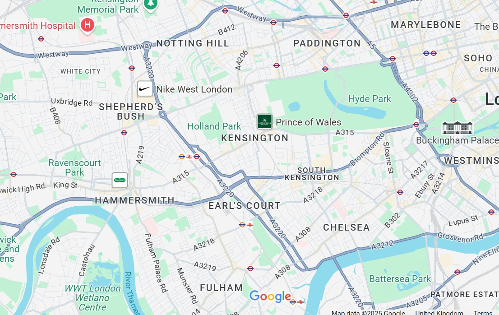

Supportive Walks for Men's Mental Health
Kensington, Chelsea, Hammersmith & Fulham
Join MENd for free walk and talk sessions tackling men's mental health. From suicide prevention to depression support, our community builds strength through open conversations in West London parks. A safe space for men who've suffered to support those suffering.
Join a Walk Now Get Involved
Community Walks for Mental Wellbeing
Breaking the Silence on Men's Mental Health
MENd offers peer-led walks to combat isolation, reduce stigma, and foster resilience. Inspired by those who've overcome challenges, our sessions in local parks provide informal support, exercise, and connection for men in our community.
Contact Us Learn More